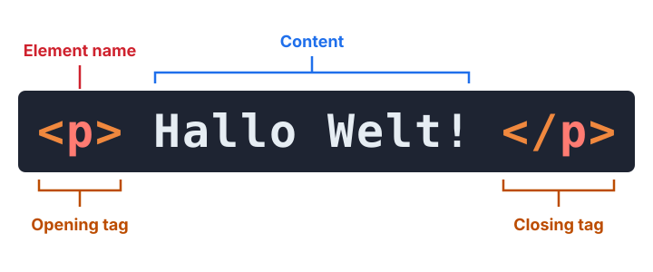
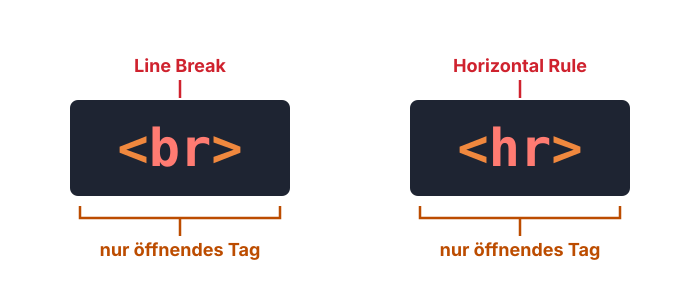
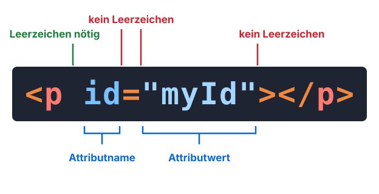
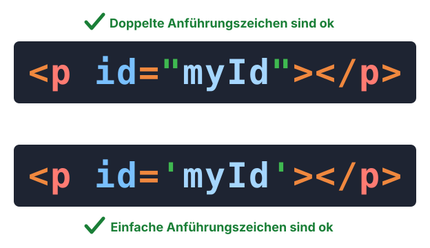
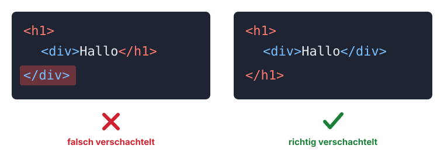
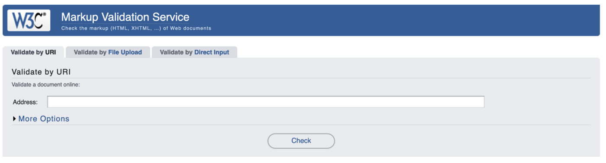
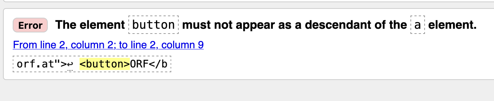
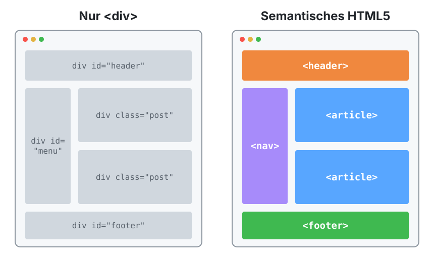

Lektion 1.4 — Teil 1: Web & HTML
HTML-Elemente & Semantik
Lernziele
- Den Aufbau eines HTML-Elements beschreiben: Start-Tag, Inhalt, End-Tag, Attribute
- Leere Elemente wie
<br>und<hr>kennen - Elemente korrekt verschachteln
- Navigation über Links und Buttons umsetzen – und wissen, welche Variante valide ist
- HTML mit dem W3C Validator prüfen
- Seiten mit den semantischen HTML5-Elementen
<header>,<nav>,<main>,<article>,<aside>,<footer>strukturieren
1 — Anatomie eines HTML-Elements
Start-Tag, Inhalt, End-Tag
Ein HTML-Element besteht aus einem öffnenden Tag (Opening Tag) mit dem Elementnamen, dem Inhalt (Content) und einem schließenden Tag (Closing Tag) mit einem Schrägstrich.

Leere Elemente
Manche Elemente haben keinen Inhalt und deshalb nur ein öffnendes Tag
– zum Beispiel <br> (Line Break, Zeilenumbruch) und <hr> (Horizontal Rule,
horizontale Linie). Weitere Beispiele: <img>, <input>, <meta>, <link>.

Attribute
Im öffnenden Tag können Attribute stehen. Ein Attribut besteht aus Attributname und Attributwert. Dabei gelten Leerzeichen-Regeln:
- Zwischen Elementname und Attribut muss ein Leerzeichen stehen.
- Rund um das
=und innerhalb der Anführungszeichen am Rand ist kein Leerzeichen erlaubt.

Anführungszeichen
Attributwerte werden in Anführungszeichen gesetzt. Sowohl doppelte
("myId") als auch einfache ('myId')
Anführungszeichen sind erlaubt. Üblich sind doppelte.

Verschachtelung
Elemente dürfen ineinander verschachtelt werden. Dabei gilt: Was zuletzt geöffnet wurde, wird zuerst geschlossen. Elemente dürfen sich nicht überkreuzen.

<!-- ✗ falsch: Tags überkreuzen sich -->
<h1><div>Hello World!</h1></div>
<!-- ✓ richtig: innen zuerst schließen -->
<h1><div>Hello World!</div></h1>2 — Exkurs: Navigation mit Links
Das Element <a> (Anchor) erzeugt einen Hyperlink. Das Ziel steht im Attribut
href. Der Inhalt eines Links kann reiner Text oder anderes HTML sein:
<!-- Anchor mit Text-Content -->
<a href="https://www.orf.at">
ORF
</a>
<!-- Anchor mit HTML-Content -->
<a href="https://www.orf.at">
<div>ORF</div>
</a>3 — Exkurs: Navigation mit Buttons
Soll ein Button zu einer anderen Seite führen, gibt es mehrere Wege – nicht alle sind erlaubt:
<!-- Button mit JavaScript onclick-Handler -->
<button onclick="location.href='https://www.orf.at'"
type="button">ORF
</button>
<!-- Button ohne JavaScript -->
<form>
<button formaction="https://www.orf.at">ORF</button>
</form>
<!-- Button ohne JavaScript; nicht valides HTML5 :-( -->
<a href="https://www.orf.at">
<button>ORF</button>
</a>Ein <button> darf nicht in einem <a> stehen (und umgekehrt). Beide sind
„interaktiv“ – der Browser wüsste nicht, welche Aktion beim Klick gilt.
Faustregel: Links (<a>) für Navigation, Buttons für Aktionen.
Soll ein Link wie ein Button aussehen, gestaltet man ihn mit CSS.
4 — W3C Validator
Das W3C (World Wide Web Consortium) bietet einen Validator, mit dem man HTML- (und CSS-) Markup auf Konformität mit den Standards überprüfen kann.
Besteht das Markup diese Prüfung, entspricht es den etablierten Webstandards.
https://validator.w3.org/

Prüfen wir die nicht valide Button-Variante von oben:
<!-- Button ohne JavaScript; nicht valides HTML5 :-( -->
<a href="https://www.orf.at">
<button>ORF</button>
</a>
Browser sind sehr fehlertolerant und zeigen auch fehlerhaftes HTML irgendwie an. Genau deshalb fallen Fehler oft erst später auf – z. B. wenn das Layout in einem anderen Browser zerbricht oder Screenreader die Seite falsch vorlesen.
5 — HTML5 Semantic Markup
Früher wurden Seiten nur mit <div>-Elementen und IDs gebaut (div id="header",
div class="post" …). HTML5 führte eigene Elemente ein, deren Name
bereits ihre Bedeutung (Semantik) beschreibt:

| Element | Bedeutung |
|---|---|
<header> |
Kopfbereich einer Webseite oder eines Abschnitts. Kann den Seitentitel, das Logo, die Hauptnavigation oder andere einleitende Inhalte enthalten. |
<nav> |
Hauptnavigation einer Webseite. Sollte nur für Hauptnavigationsbereiche verwendet werden, nicht für jede Gruppe von Links auf der Seite. |
<main> |
Hauptinhalt der Webseite. Sollte einzigartig für das Dokument sein und keine Inhalte enthalten, die sich über mehrere Seiten wiederholen (z. B. Seitennavigation, Footer-Inhalte). |
<article> |
Ein in sich geschlossener Abschnitt der Webseite. Ist thematisch von den umgebenden Inhalten getrennt und für sich allein verständlich (z. B. ein Blogpost, eine Meldung auf einer Nachrichtenseite). Kann <header>, <footer> und andere semantische Elemente enthalten. |
<aside> |
Gehört nur indirekt zum Hauptinhalt und wird oft als Sidebar dargestellt. Zum Beispiel Werbung, Nutzerhinweise oder Verweise auf verwandte Inhalte. |
<footer> |
Fußbereich einer Webseite oder eines Abschnitts. Kann Informationen wie Autor:in, Copyright-Hinweise oder Links zu verwandten Dokumenten enthalten. |
HTML5 Semantic „Hello World“
<header>
<h1>Rezept</h1>
</header>
<nav>
<ul>
<li><a href="#">Home</a></li>
<li><a href="#">Über mich</a></li>
</ul>
</nav>
<article>
<h2>Kochrezept</h2>
</article>
<footer>
<p>Copyright © 2023 Chefkoch</p>
</footer>- Barrierefreiheit: Screenreader können direkt zu
<nav>oder<main>springen. - Suchmaschinen erkennen, was Hauptinhalt ist.
- Lesbarkeit: Der Code erklärt sich selbst –
<footer>statt<div id="footer">.
6 — Links und Quellen
- Referenz: developer.mozilla.org/en-US/docs/Web/HTML/Reference/Elements/html
- HTML Validator: validator.w3.org/detailed.html
- Tutorials: w3schools.com
- W3C Konsortium: w3.org
- Web Hypertext Application Technology Working Group: whatwg.org
Projektschritt
Semantische Struktur
Wir gliedern die Seite mit semantischen Elementen: <header> mit Marke und
<nav>, <main> mit den Bereichen als <section> (jeweils mit id für die
Sprungmarken), ein <aside> mit Werkzeug-Tipps und ein <footer>.
<body>
<header>
<span class="brand">Web- and Mobile Computing</span>
<nav id="nav-menu">
<ul>
<li><a href="#html">HTML</a></li>
<li><a href="#elemente">HTML-Elemente</a></li>
<li><a href="#css">CSS</a></li>
<li><a href="#lernprojekt">Lernprojekt</a></li>
<li><a href="#kontakt">Kontakt</a></li>
</ul>
</nav>
</header>
<main>
<h1>Demoseite: Webdesign Grundkurs</h1>
<section id="html"> … Text + HTML5-Logo … </section>
<section id="elemente">
<h2>HTML Elemente</h2>
<table>
<caption>Wichtige HTML-Elemente</caption>
<thead>
<tr><th>Element</th><th>Erklärung</th></tr>
</thead>
<tbody>
<tr><td><code>head</code></td><td>Metadaten, Titel …</td></tr>
…
</tbody>
</table>
</section>
<aside> … Visual Studio Code … </aside>
<section id="css">
<h2>CSS</h2>
<div class="cards">
<article class="card">
<h3>Boxmodell</h3>
<p>Content, Padding, Border und Margin …</p>
<img src="img/box_model.png" alt="Boxmodell">
</article>
…
</div>
</section>
<section id="lernprojekt"> … </section>
<section id="kontakt">
<h2>Kontakt</h2>
<address>HTL Spengergasse<br>Spengergasse 20<br>1050 Wien</address>
</section>
</main>
<p class="back-to-top"><a href="#">⬆ Nach oben</a></p>
<footer> … © und Quick Links … </footer>
</body>
Die Klassen (brand, cards, card …) brauchen wir erst
ab Teil 2 fürs CSS – wir setzen sie aber gleich jetzt, damit das HTML später nicht mehr
geändert werden muss. Prüfe die Seite anschließend mit dem W3C Validator.
Häufige Fehler
<p>Text <strong>fett</p></strong> – die Tags sind überkreuzt.
Immer das zuletzt geöffnete Element zuerst schließen: <p>Text <strong>fett</strong></p>.
<a href="…"><button>…</button></a> wird vom Validator als Fehler gemeldet.
Für Navigation ein <a> verwenden und es per CSS wie einen Button gestalten.
<main> beschreibt den einen Hauptinhalt des Dokuments.
Pro Seite genau ein sichtbares <main>. Für mehrere Bereiche <section> oder <article> verwenden.
Aufgaben
Finde alle Fehler und korrigiere sie. Prüfe dein Ergebnis mit dem Validator.
<h1 class = "titel">Meine Seite</h2>
<p>Das ist <em>wichtig</p></em>
<a href="kontakt.html"><button>Kontakt</button></a>
<img src="bild.jpg"></img>Schreibe folgende Struktur mit semantischen HTML5-Elementen neu: <div id="kopf">, <div id="menu">, <div class="beitrag"> (2×), <div id="seitenleiste">, <div id="fuss">.
Lege eine zweite Seite impressum.html mit derselben Header-/Footer-Struktur an und verlinke sie im Footer der Demoseite.
Füge am Ende jedes Abschnitts der Demoseite einen Link „zurück zur Navigation“ ein, der zum Element mit id="nav-menu" springt (Fragment #nav-menu).